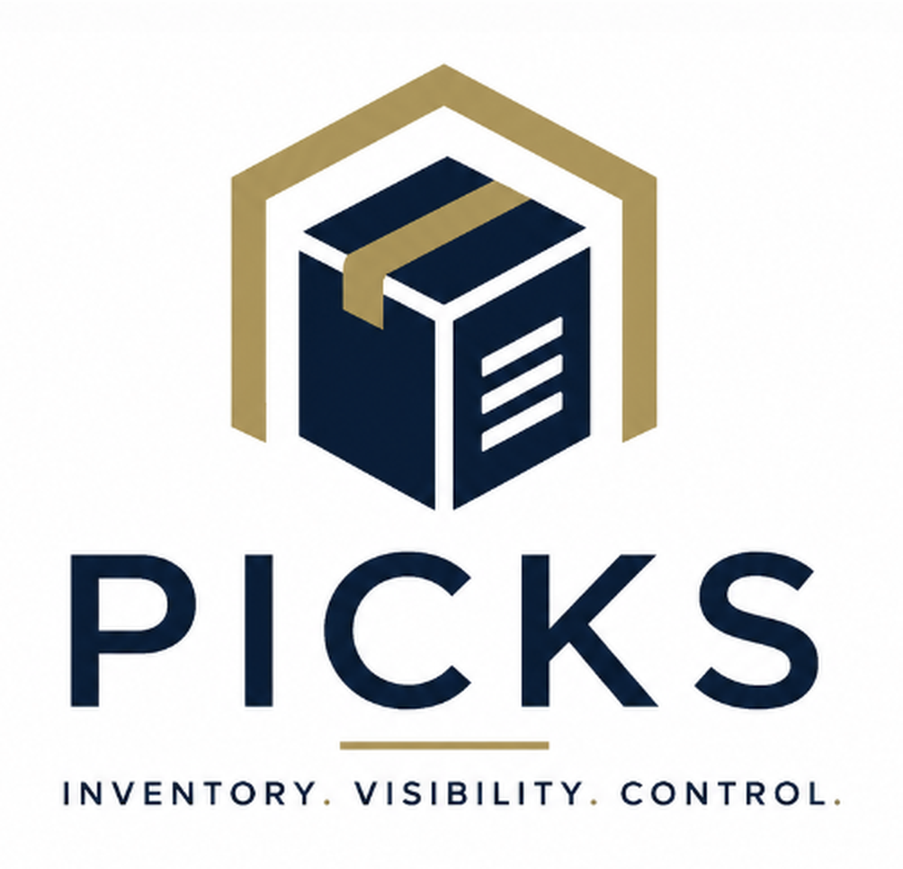

ASE 6104 Capstone
PICKS Capstone Final
Presentation package for explaining what PICKS does, what systems it may connect to, and how those choices can change over time.
Request
Inventory
Movement
Record

Presentation Views
Choose a View
Project BackgroundUnderstand why PICKS is needed, what changed during the capstone, and what the final package supports.
Interview FindingsReview lab discovery themes, current tool patterns, pain points, and design implications.
General RequirementsReview stakeholder needs, highlighted system requirements, and prioritization drivers.
System LayoutClick through major PICKS systems and responsibilities.
Option ComparisonCompare system choices using cost, fit, security, and upkeep.
Integration FlowSee how a request is checked, enriched, matched, updated, and recorded.
What-if ScenariosSee how future choices change the information flow.
Data PayloadsReview information sent, received, checked, or recorded.
Test CasesReview verification examples for exchange, controls, and errors.
Final RecommendationReview the modular integration architecture, design priorities, and phased implementation approach.
Final MaterialsView the final presentation, MSOSA model, and SEMP report.
Acronym ReferenceLook up abbreviations used in system names and examples.
Prepared by PICKS Team 2.